Lo specchio e la finestra
Usare l'IA per aprire nuove prospettive sulle nostre storie.
Leggi la newsletter →Insegno Storia della filosofia medievale e studio Agostino da trent'anni. Scrivo di intelligenza artificiale, racconto storie di provincia e porto la filosofia fuori dall'aula. Sono da sempre appassionato di tecnologia, musica, chitarra, letteratura, videogiochi, scacchi. E molto altro.
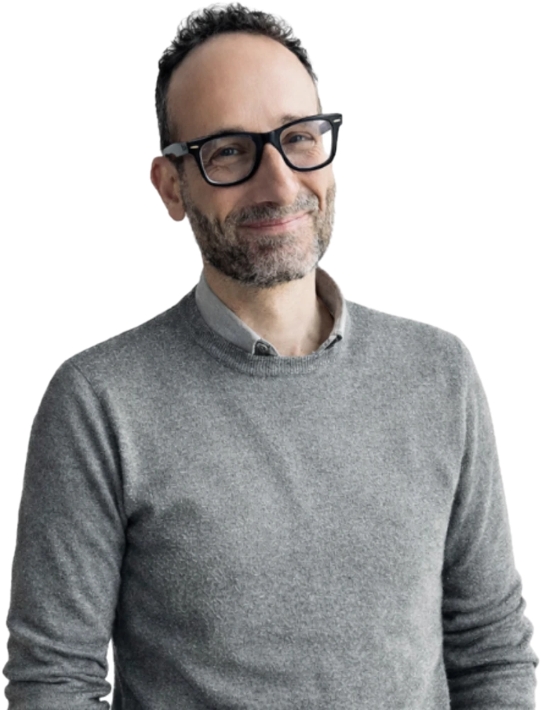
È presto giorno, ancora uno. Fa' ciò che puoi.
Czesław MiłoszCinque libri sul pensiero tardoantico e altomedievale e un manifesto per le Humanities di oggi.
Scopri la ricerca → IA e nuove tecnologieLa newsletter Macchine Pensanti, il podcast Macchine Parlanti, il libro Una intelligenza fantastica.
Leggi e ascolta → RomanziTerapie e Mosaici, due gialli pubblicati da De Tomi.
Scopri i romanzi → PhitnessUn laboratorio per allenarsi a concentrarsi, leggere con attenzione, scrivere con metodo.
Come funziona →Usare l'IA per aprire nuove prospettive sulle nostre storie.
Leggi la newsletter →Ancora sul rapporto tra competenze e IA.
Ascolta la puntata →Dalla tesi sul libero arbitrio in Giovanni Scoto al dottorato sull'età carolingia, fino ad Agostino. Sullo sfondo, la filosofia del linguaggio, il rapporto tra politica, religione e filosofia, quello tra discipline umanistiche e mondo contemporaneo.
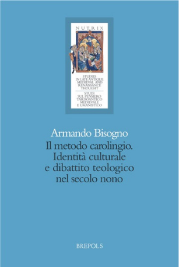
I filosofi e i teologi delle corti carolinge pensati come un unico pensatore, con un'unità di intenzione e di metodo.
Brepols · Nutrix →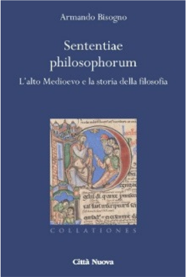
Che cos'è la storia della filosofia? Perché gli altomedievali leggevano i pensatori del passato, e con quale metodo.
Città Nuova · Collationes →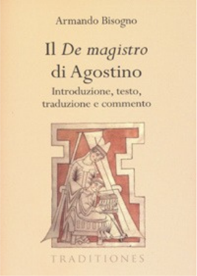
Traduzione commentata. Quanto le parole servono a farsi capire, e quanto diventano un ostacolo.
Città Nuova · Traditiones →Il percorso intellettuale di Agostino letto come una ricerca della verità.
Città Nuova · Institutiones →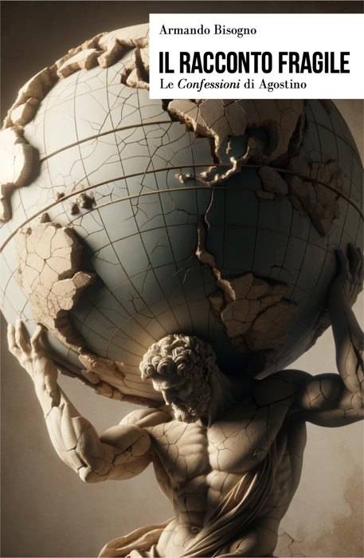
Le Confessioni come racconto di una fragilità esposta. Una versione più breve, in attesa della versione più ampia, che uscirà nel 2027, anch'essa ad accesso aperto.
Scaricalo gratis su Zenodo →Ermenetica è un neologismo: ermeneutica più etica. Oggi chi si occupa di discipline umanistiche non può interpretare senza assumersi una responsabilità.
Il nostro tempo ha bisogno di sguardi umanistici, purché chi li offre non si nasconda dietro la presunta oggettività dei numeri e rivendichi il proprio ruolo di interprete posizionato, con la sua storia intellettuale e culturale.
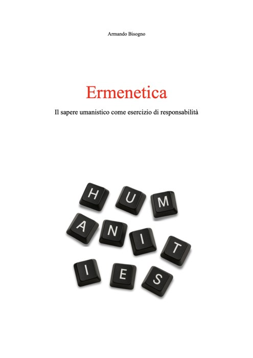
Una newsletter, un podcast e un libro aperto. Tre modi di fare la stessa cosa: leggere le nuove tecnologie con gli strumenti delle Humanities.
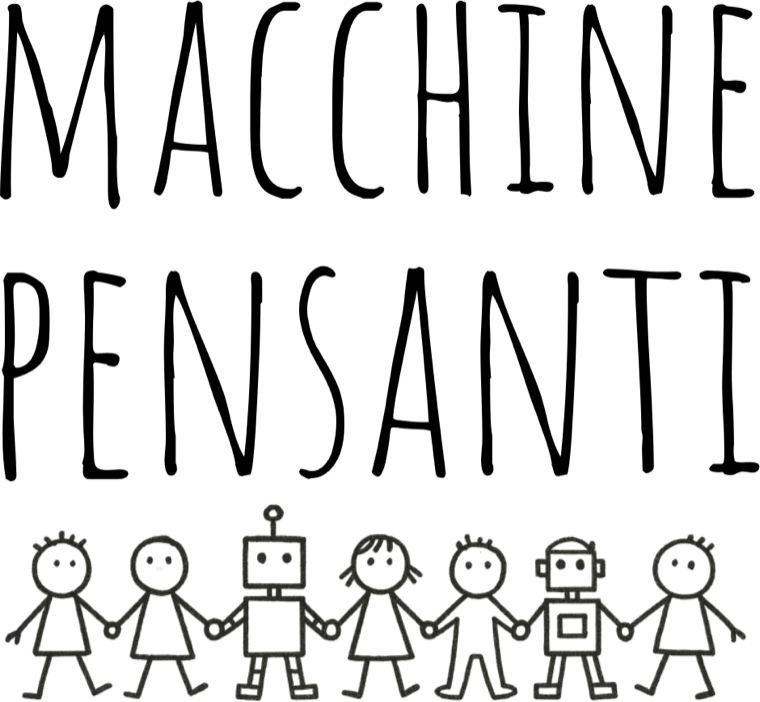
Una lettura umanistica delle nuove tecnologie e in particolare dell'intelligenza artificiale.
Iscriviti su Substack →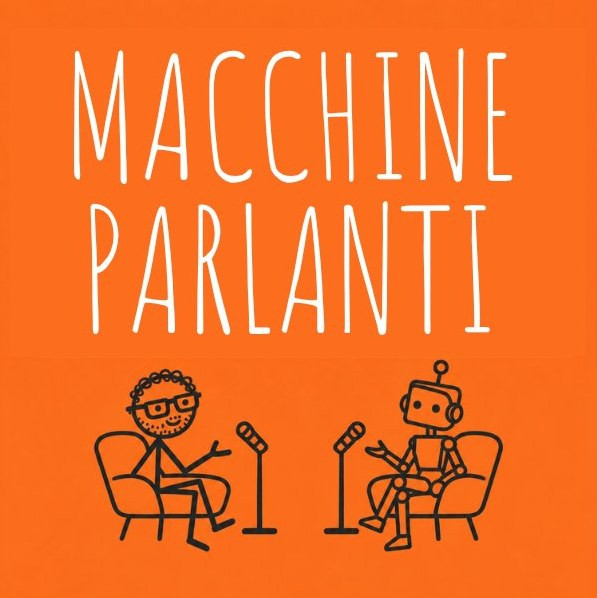
Puntate brevi sulle nuove tecnologie e sulla cultura contemporanea.
Ascolta →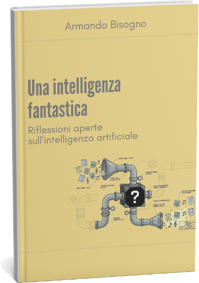
Otto riflessioni aperte sull'intelligenza artificiale, lette con gli occhi di uno studioso di filosofia. Un libro che cresce con gli inviti delle comunità che vogliono discuterne.
Scaricalo gratis →Terapie e Mosaici sono due romanzi ambientati a Fossa Etrusca, città immaginaria di provincia. Le indagini di Malversi passano attraverso le pagine di un diario terapeutico, tra istituzioni, tracce e blues.
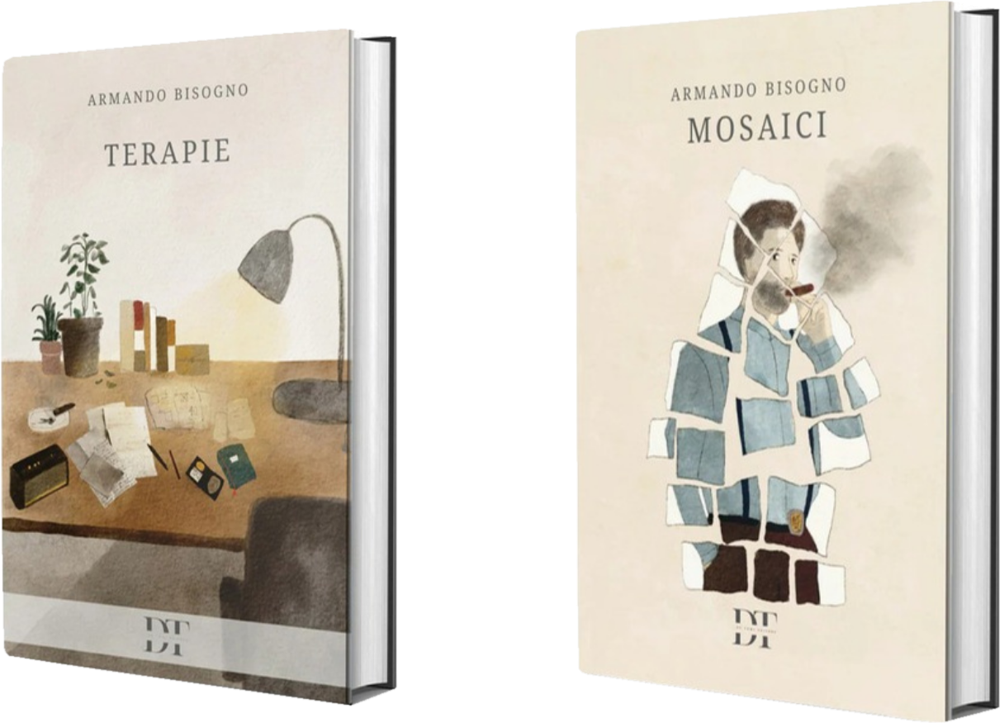
Phitness è un fitness filosofico. Porta nella tua azienda o nella tua comunità un tempo di esercizio guidato per recuperare tre capacità che il lavoro di oggi consuma: concentrarsi su un problema, leggere con attenzione, scrivere dopo aver pensato.
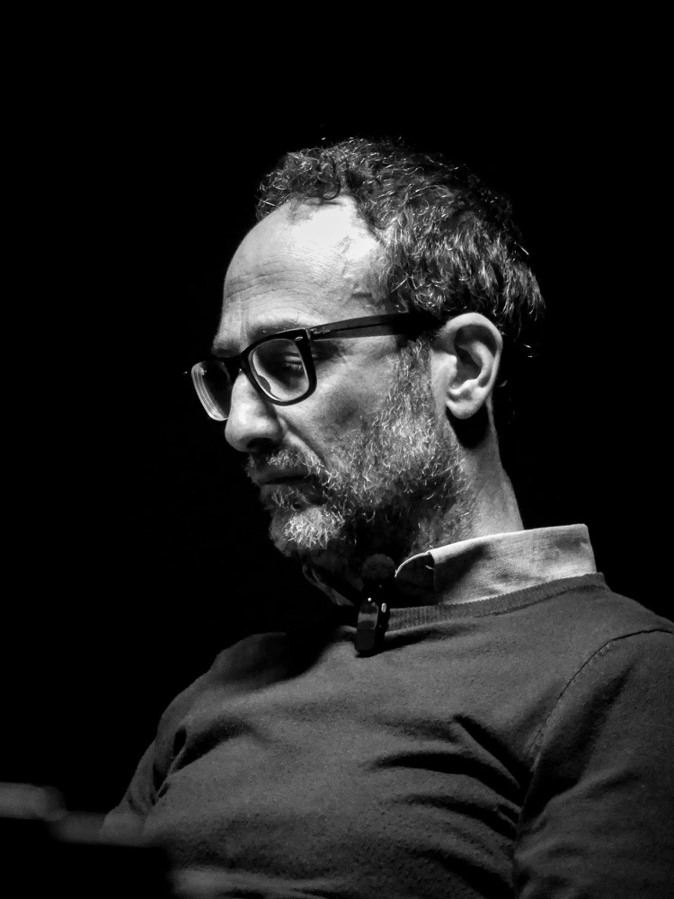
Da decenni gli studi registrano un declino lento delle nostre capacità cognitive. Vediamo e produciamo contenuti veloci, che non chiedono attenzione analitica né a chi li scrive né a chi li legge.
L'intelligenza artificiale ha amplificato il fenomeno: riassume i testi e li scrive al posto nostro. Meno sappiamo concentrarci, leggere a fondo e costruire un'idea prima di scriverla, più è facile lasciare che lo faccia la macchina.
Cal Newport, sul New York Times, ha proposto un allenamento vero e proprio, un fitness cognitivo. Phitness nasce da qui.
Un problema della storia della filosofia, presentato in modo chiaro, per allenare la mente a restare su un solo tema.
Uno o più testi, letti in silenzio. Concentrarsi sulle parole per pe(n)sarne il significato.
Un testo su un tema dato al momento. Nessuna epoca ha scritto tanto come la nostra, poche hanno pensato così poco prima di farlo.
Zero performance, solo esercizio.
Phitness non è una gara né una valutazione. Nessuno viene interrogato, nessuno deve scrivere più o meglio dei colleghi. È un tempo restituito al pensiero, con i ritmi di ciascuno.
Ogni incontro segue lo stesso schema, così che il gruppo impari a riconoscerlo e a entrarci con facilità.
Scrivere è l'esercizio più esposto, per questo è anche il più protetto. Consegnare il testo è una scelta, mai un obbligo.
Alla fine dell'incontro ognuno decide se lasciare il proprio testo. Chi preferisce tenerlo per sé lo porta via, e nessuno lo leggerà.
Il testo si consegna in forma completamente anonima. Nessuno saprà chi ha scritto cosa. Nemmeno io.
Ogni testo consegnato riceve una restituzione personalizzata: una lettura attenta, con osservazioni su come il pensiero è stato costruito e messo per iscritto.
Un laboratorio per far conoscere il metodo al gruppo. Adatto a una giornata di formazione, a un evento interno, a una pausa dal lavoro ordinario.
Un ciclo di incontri a cadenza regolare. Ogni sessione ha un tema diverso e gli esercizi diventano un'abitudine, come accade con l'allenamento fisico.
In presenza, nella sede dell'azienda, oppure online. I dettagli si definiscono insieme in un primo colloquio.
Insegno Storia della filosofia medievale all'Università di Salerno e scrivo Macchine Pensanti, una newsletter sul rapporto tra esseri umani e intelligenza artificiale. Phitness mette in pratica quello che chiamo ermenetica: portare le competenze umanistiche fuori dall'università, dove possono servire.
Laurea in Storia della filosofia medievale all'Università di Napoli Federico II, con Valeria Sorge, sul libero arbitrio in Giovanni Scoto. Dottorato all'Università di Salerno con Giulio d'Onofrio, sull'età carolingia.
Oggi insegno Storia della filosofia medievale all'Università di Salerno, dove sono anche Direttore del Dipartimento di Scienze del Patrimonio Culturale. Fuori dall'università: tecnologia, musica, chitarra blues, letteratura, videogiochi, scacchi.
arbisogno@unisa.it
Nel sito vero ci saranno anche un modulo di contatto e i link a Substack, LinkedIn, Instagram e Zenodo.